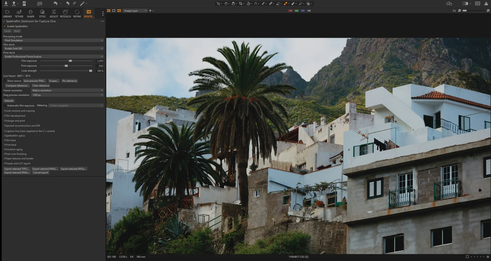

Quick start
Your first photo from RAW to file in ten steps. Each step points to the chapter that describes it in detail.

Ten steps
- Make a working variant. In C1, create a clone of the photo's variant (Image › Clone Variant). Spektrafilm settings are separate for each variant. Note: Spektrafilm is switched on by default for every variant without a saved look, including the original. On an original that should stay without film, untick Enable Spektrafilm.
- Correct only the technical things in C1. White balance, exposure, crop, straightening, lens correction, noise reduction, retouching. Leave curves, Levels, colour grading and styles neutral. Details in chapter 3.
- Check that Spektrafilm is working. Open the SPEKTR… tab. Enable Spektrafilm is ticked by default for a variant without a saved look. The first full preview appears after a few seconds; later changes are faster.
- Check the input. A new look uses the Neutral for film preparation and the ProPhoto RGB colour space. If you see a note under the Look strength slider saying that the look uses "Capture One development" or an sRGB input, click Use recommended input. The previous look is saved as a version.
- Choose the process and materials. Processing mode: Print Simulation. Film stock: Kodak Portra 400 to start with. Print stock: Kodak Professional Portra Endura. This is a gentle, all-round pair. Other pairs in chapter 4.
- Set the film exposure. The panel meters the photo itself, and Film exposure shifts the metering result. When the highlights burn out, lower it by 0.3–1 EV. When the shadows are empty and noisy, raise it.
- Set the brightness of the print. Print exposure works like the exposure time of the paper: more means darker. Change it in steps of 0.1–0.3 EV.
- Refine the print contrast. When the image is too hard, lower Print gamma to 0.8–0.9 in the Enlarger and print section. When the highlights lack detail, set Print highlight shape to a negative value, e.g. −0.5, or add a very small amount of Preflash exposure (0.01–0.02) and balance the brightness by lowering Print exposure by about 0.3. When it is too soft, raise Print gamma. More in chapter 5.
- Add character if you like. Halation and diffusion in Spektrafilm optics (chapter 7), grain in Spektrafilm grain (chapter 8). Small values are enough to start with.
- Compare and export. Pin reference keeps the current look for comparison with later attempts. Save the finished photo with the Export with Spektrafilm… button or with an ordinary C1 export with one recipe enabled (chapter 11).
What to watch in the preview
- Highlights. White walls, sky, skin in the sun. They should have detail, not flat white.
- Midtones and skin. These tell you the most about the film–paper pair.
- Shadows. On the print, deep shadows are often darker than in C1. This is normal, but they should not merge into one dark patch.
- The colour of neutral surfaces. Grey concrete and white walls show whether the filtration is right.
The preview in the Viewer uses the same settings as the export. Judge grain and effects calculated in pixels (Micro contrast, Glare blur) at 100% zoom (with Viewer resolution = Auto the panel then calculates full resolution) or at Native resolution. The panel renders the preview at the resolution set in Viewer resolution, and while you drag sliders it shows a faster frame at the Drag preview resolution size.
When something goes wrong
| Symptom | Most common cause | What to do |
|---|---|---|
| Too much contrast, burnt-out highlights | Input with a C1 curve, or too much film exposure | Use recommended input, lower Film exposure, lower Print gamma |
| Image softer than in C1 | The neutral input skips sharpening, Clarity and Structure from C1 | Scanner sharpening or Micro contrast (chapter 9) |
| Controls are grey | Spektrafilm is switched off, or the function does not work in the current mode | Check Enable Spektrafilm and Processing mode |
| A render error message | A setting the renderer does not accept | Read the message and see chapter 13 |
| The look disappeared after copying C1 adjustments | C1 Copy/Apply does not carry Spektrafilm | Use Copy look in the panel (chapter 10) |